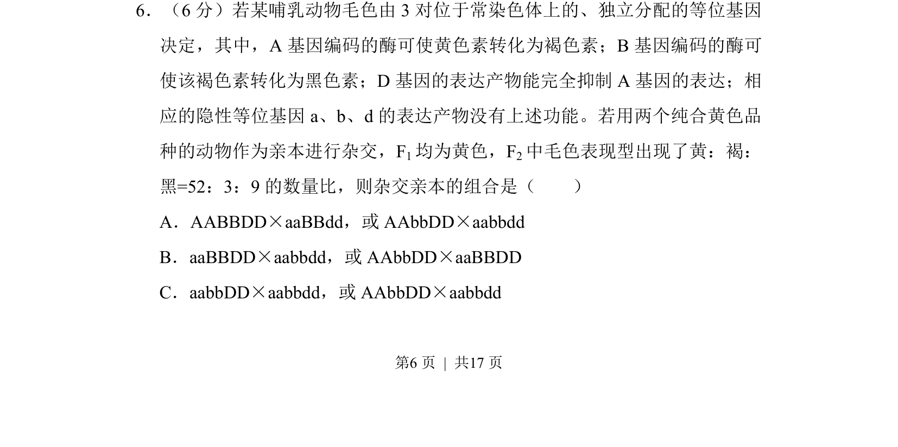
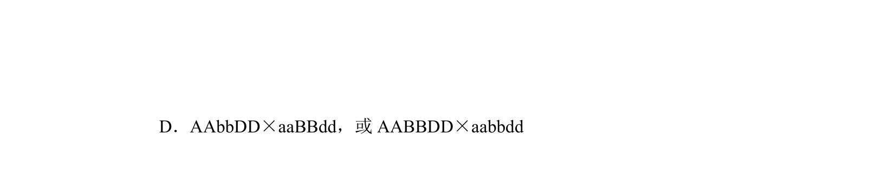
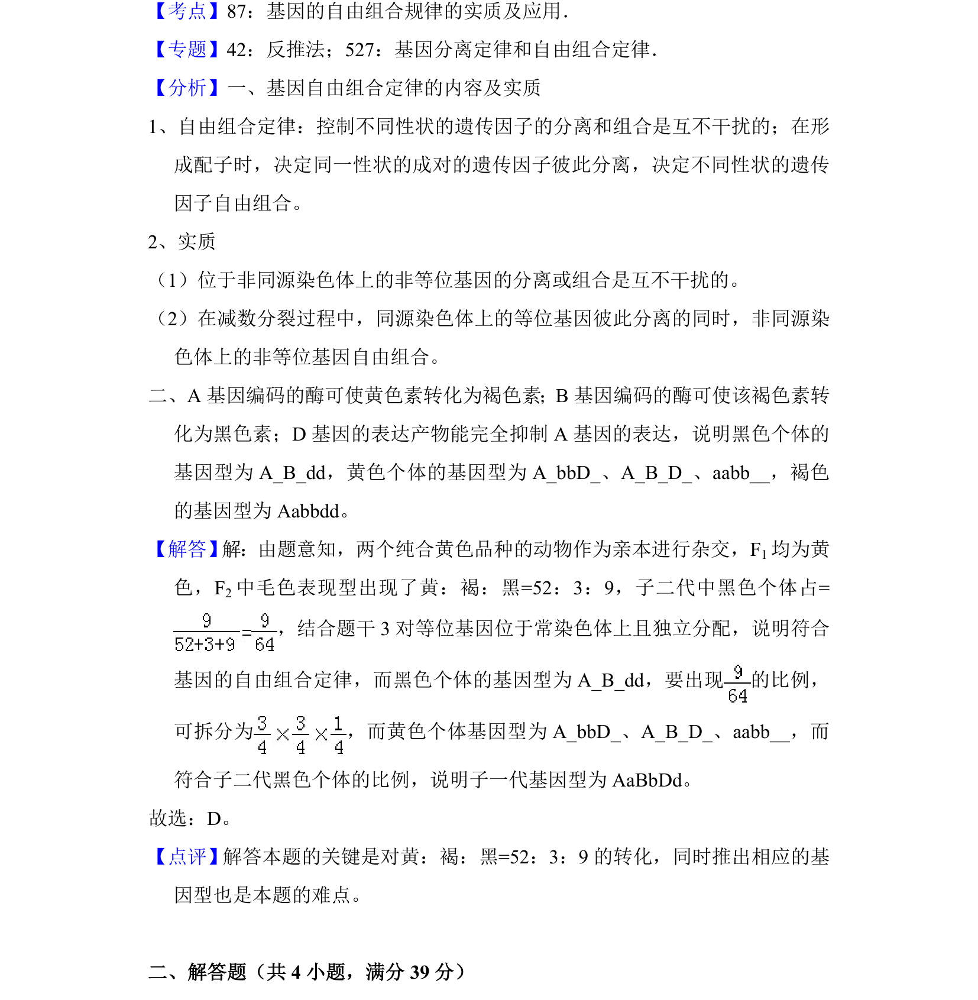

考点：自由组合定律 基因互作 性状分离比 遗传推断


通过3对基因的自由组合及互作关系，分析F2特殊性状分离比推断亲本组合。

📄 原 PDF 第 6 页：
素材/真题/吉林/2008-2024·（吉林）生物高考真题/2017年高考生物试卷（新课标Ⅱ）（解析卷）.pdf
6．（6分）若某哺乳动物毛色由3对位于常染色体上的、独立分配的等位基因 决定，其中，A基因编码的酶可使黄色素转化为褐色素；B基因编码的酶可 使该褐色素转化为黑色素；D基因的表达产物能完全抑制A基因的表达；相 应的隐性等位基因a、b、d的表达产物没有上述功能。若用两个纯合黄色品 种的动物作为亲本进行杂交，F1均为黄色，F2中毛色表现型出现了黄：褐： 黑=52：3：9的数量比，则杂交亲本的组合是（ ） A．AABBDD×aaBBdd，或AAbbDD×aabbdd B．aaBBDD×aabbdd，或AAbbDD×aaBBDD C．aabbDD×aabbdd，或AAbbDD×aabbdd